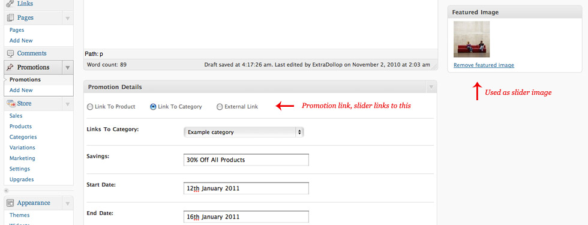
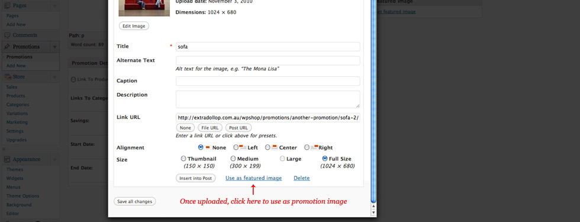
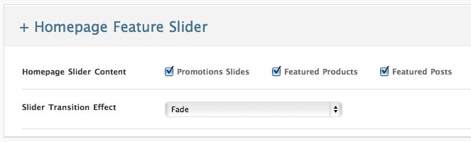
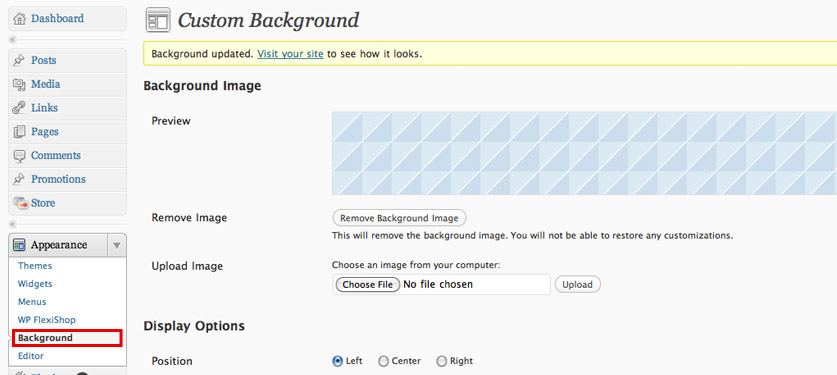

Created: 02/11/2010
By: Saxon Fletcher
Email: saxon@extradollop.com.au
Thank you for purchasing my theme. If you have any questions that are beyond the scope of this help file, please feel free to email via my user page contact form here. Thanks so much!
For detailed Wordpress installation instructions visit http://codex.wordpress.org/Installing_WordPress
For detailed WP E-commerce installation instructions or for more information visit http://wordpress.org/extend/plugins/wp-e-commerce/installation/
For this theme to work correctly you will need to install the wp e-commerce plugin linked here. You can install and activate this plugin like any other Wordpress plugin, download the zip file, extract into the plugins directory, and install via the Wordpress admin area.
There are two parts to this theme, the basic Wordpress theme, and the Wp E-commerce theme. Make sure you install the wp-ecommerce plugin before going any further.
Once you have activated both themes you will need to change some of the page and media settings for optimal performance.
The theme uses timthumb.php to resize slider images. For this reason you should ensure there is a /cache/ folder located in wp-content/flexishop/ theme folder. This folder should have write-permissions, if you run into problems you can try and manually change the permissions to 777. The containing folder should also have permissions of 777. For more information visit the timthumb homepage at http://www.darrenhoyt.com/2008/04/02/timthumb-php-script-released/
You will need to change a few settings for the homepage and shop to display correctly. Follow the steps below and you will be adding content in no time.
You may find you will have trouble uploading larger files, in some cases this is due to a php memory limit and you will need to speak with your host. In other cases simply changing your "Large Size" in media settings to a large amount will fix the problem
A lot of the wp e-commerce settings are optional, for example breadcrumbs and category images, however there are a few presentation settings you should change to make sure everything works hunky dory.
The theme has three different layouts for you to switch between. Each layout has the ability to change the background, fonts and content.
The simple layout is elegant and sophisticated by default, yet though a basic background change and a few color swaps, you can change the entire look to suit your business and brand.
The full layout adds a changeable footer and header area to inject a bit of color into the design. You can even add a background image to the slider area for unlimited possibilities (e.g. a new background for each season).
The boxed layout is the safest choice when customising the theme. Add a background color or image, swap out fonts, for a completely different look.
Used to change the colors of a variety of text types in the site.
Choose from a selection of 24 fonts using a combination of Google Font API and hand selected fonts. All header fonts use the accessible @font-face as a way of replacing fonts. More fonts will be added by request.
Promotions are a custom post type which were made to be used as a way of displaying current sales, special deals, or even just a featured product. In fact, they can be used for pretty much anything! You have the option for the promotion to be linked to a product, a category or a custom link, its completely up to you! Just upload an image using the “Set Featured” section at the appropriate width (980 by 375, larger images will be cropped down to fit), and bobs your uncle!
 Featured products and posts are added through the slider post type mentioned below.
The homepage slider uses a selection of content which you can define in the theme settings. Images for both promotions and featured posts are pulled from the “Set Featured” section when creating a post. For best performance each image should be 980 width by 375 height, however larger images will be cropped automatically so no need to stress.
To create a new slider, simple login to your admin panel, and click on add new slider in the left hand menu. From hear you can choose the type of slider (featured product, featured post, featured promotion) and the actual slider content. Once done, click on publish, and your slide will magically appear on the homepage.
To change the background image, login to wordpress admin and go to appearance->background, upload an image using the upload button and select your tiling settings. You can view a preview of your background in the preview square located at the top of the page.
There are a total of 12 widget areas which you can use to add your own content and functionality. There are two in the sidebar, two in top footer area, five in the lower footer area, and three on the homepage. The homepage widget areas are great for adding text and images using a text widget, if no homepage widgets are set, this area will remain blank and won't effect the design.
The theme uses the menu feature under "appearance" to create the primary menu. However if no menu is chosen then all pages will be included in the primary navigation
This theme uses one main css file along with a css file for each of the individual layouts. Style.css controls all common elements whilst boxedlayout.css, and fulllayout.css control layout specific elements
WP FlexiShop supports features of the wp e-commerce gold cart plugin. Features include multi-image support and product search. There is no need to switch to Grid View as this is naturally built into the theme.
Multiple Images - To enable multiple images, go to store->settings->presentation and make sure "Show Thumbnail Gallery" is set to yes.
Product Search - To enable product search, go to store->settings->presentation and make sure "Show Search" is set to yes, there is no reason to turn on advanced search as there is only one view for products.
This theme utilises the jQuery framework and imports a number of custom and 3rd party scripts .
This theme uses a number of resources developed by the web community. The theme is based on the popular Starkers Theme by Elliot Jay Stock http://www.starkerstheme.com/
Once again, thank you so much for purchasing this theme. If you have any further questions be sure leave a comment using the themeforest comment area, and I will get back to you as soon as possible! I also accept requests, so if you have an idea, post a comment and and I will do my best to implement it as a free update.
Saxon Fletcher